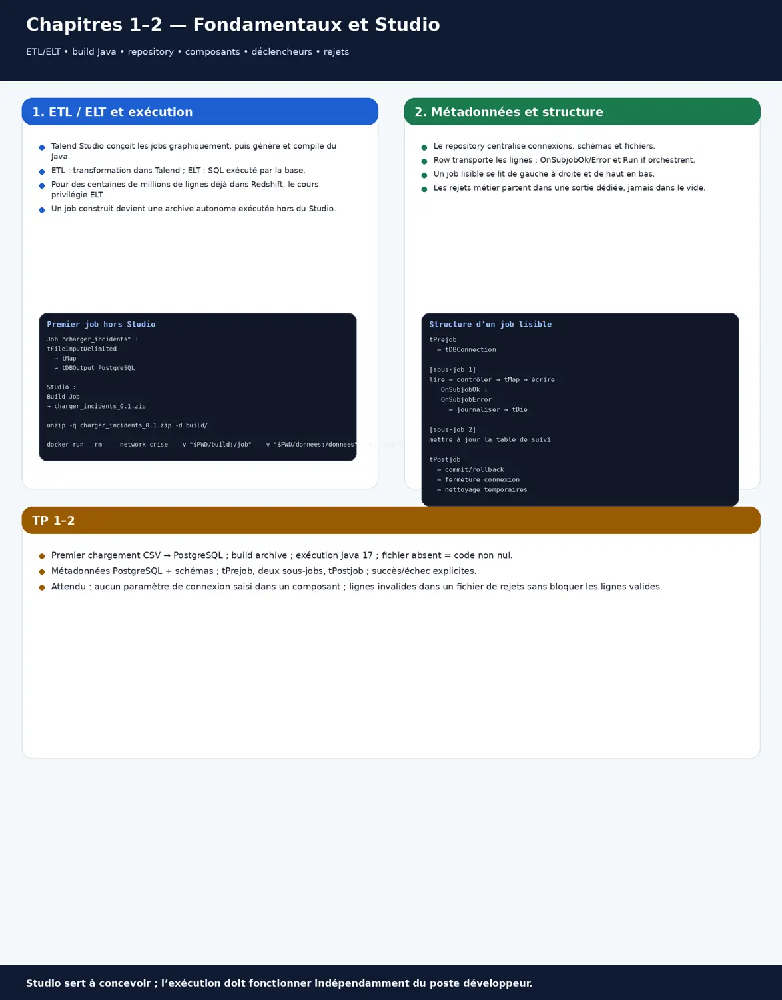
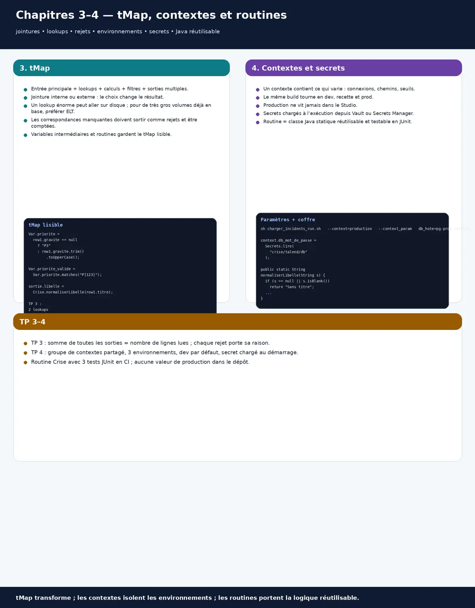
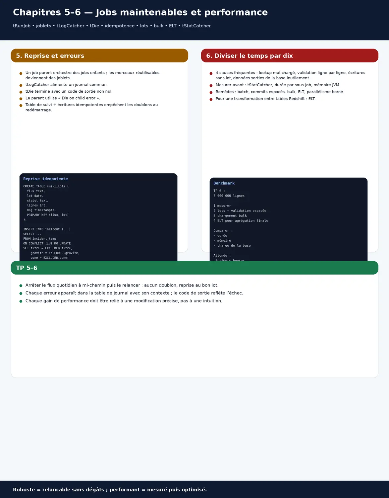
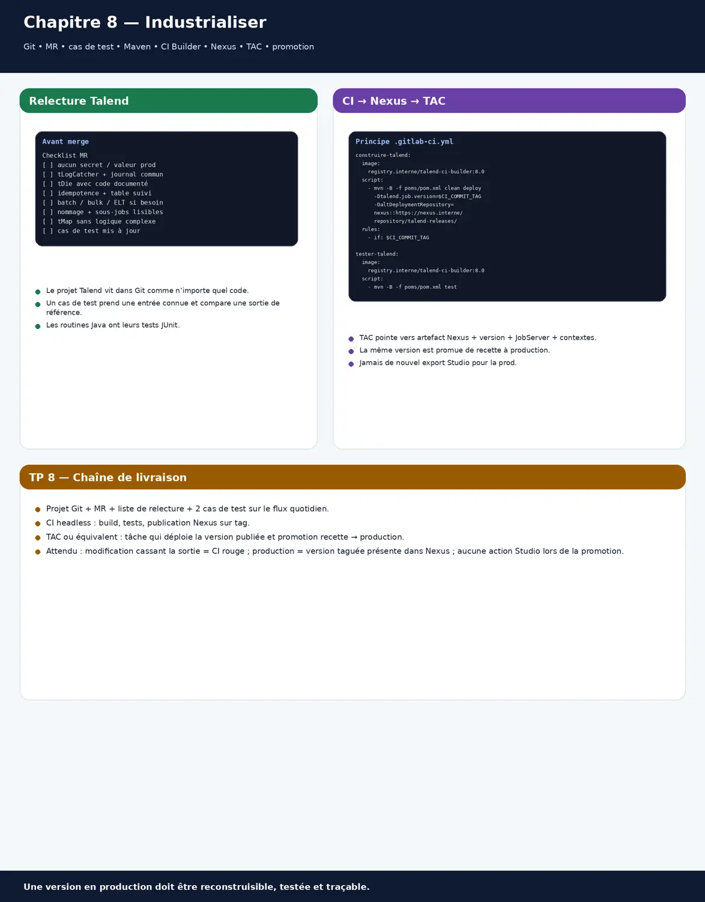
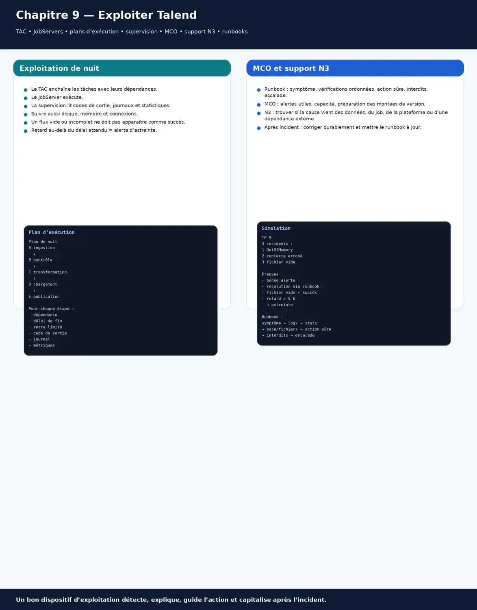

Dix chapitres pour concevoir, industrialiser et exploiter des flux Talend : l'écosystème (Studio, TAC, JobServer, Nexus, Qlik Talend Cloud), le Studio et ses composants, tMap, contextes et secrets, jobs maintenables (erreurs, codes de sortie, reprise), performance (lots, bulk, ELT), Talend et AWS (S3, Redshift, rôles IAM), CI et déploiement par le TAC, exploitation et support de niveau 3, audit d'un existant et 30 questions d'entretien. Les exécutions, bases et outils tournent en conteneur ; chaque chapitre a ses exercices corrigés et un travail pratique avec correction type.
≈ 40 h de travail · prérequis : SQL, bases de Java, Docker ; complète le cours Data Platform.
Talend conçoit des traitements de données (jobs) dans un Studio graphique ; chaque job est généré en Java, construit en archive, puis exécuté sur un JobServer.
L'écosystème d'entreprise : Studio pour concevoir, Git pour versionner, un dépôt d'artefacts (Nexus) pour les versions construites, le TAC pour planifier et déployer, les JobServers pour exécuter ; Qlik Talend Cloud en est la version hébergée.
ETL transforme dans Talend ; ELT pousse les transformations vers la base (SQL) : on choisit selon les volumes et la base cible.
Un job qui marche dans le Studio peut échouer sur le JobServer : on construit l'archive et on la teste dans un conteneur identique à la production, avec ses contextes.
À la fin de ce chapitre, tu sauras
Situer chaque composant de l'écosystème Talend
Choisir entre ETL et ELT
Construire et exécuter un premier job en conteneur
Qui fait quoi
Composant
Rôle
Où il vit
Talend Studio
concevoir les jobs, métadonnées, contextes
poste du développeur
Git
versionner le projet
serveur Git de l'équipe
Nexus (ou Artifactory)
stocker les versions construites
dépôt d'artefacts
TAC (Talend Administration Center)
planifier, déployer, surveiller, gérer les droits
serveur d'administration
JobServer
exécuter les jobs
serveurs d'exécution, souvent plusieurs
Qlik Talend Cloud
console hébergée et moteurs distants (Remote Engine)
cloud, plus récent
ETL ou ELT
En ETL, les données passent par la mémoire du JobServer : souple, adapté aux transformations riches et aux sources variées. En ELT, Talend génère du SQL exécuté par la base : bien plus rapide pour de gros volumes déjà dans la base (Redshift, PostgreSQL). Beaucoup de flux combinent les deux.
Un premier job, exécuté en conteneur
Le Studio est un poste de conception ; tout ce qui s'exécute (bases, JobServer, jobs construits, CI) tourne en conteneur. Un job construit est une archive autonome lancée dans eclipse-temurin:17-jre.
Job « charger_incidents » : tFileInputDelimited (incidents.csv) → tMap → tDBOutput (PostgreSQL, table incident)
Studio : Build Job → archive charger_incidents_0.1.zip (lanceurs .sh et .bat, bibliothèques, contextes)
# exécution hors du Studio, comme sur un JobServer
unzip -q charger_incidents_0.1.zip -d build/
docker run --rm --network crise -v "$PWD/build:/job" -v "$PWD/donnees:/donnees" eclipse-temurin:17-jre \
sh /job/charger_incidents/charger_incidents_run.sh --context=dev --context_param dossier_entree=/donnees
echo "code de sortie : $?" # 0 = succès ; tout autre code doit signifier un échec (chapitre 5)
Exercice 1.1
Tu dois agréger 300 millions de lignes déjà présentes dans Redshift. ETL ou ELT ?
Corrigé
ELT : faire sortir 300 millions de lignes vers le JobServer pour les réinjecter est lent et coûteux ; les composants ELT génèrent le SQL exécuté par Redshift, là où sont les données.
Exercice 1.2
Question d'entretien : que se passe-t-il quand on construit un job Talend ?
Corrigé
Le Studio génère le code Java du job, le compile, et produit une archive autonome avec les bibliothèques, les contextes et des lanceurs ; c'est cette archive, versionnée dans Nexus, qui est déployée et exécutée par le JobServer.
Travail pratique 1 — Premier chargement
Monter PostgreSQL en Compose ; concevoir le job fichier CSV → PostgreSQL dans le Studio.
Construire l'archive et l'exécuter dans un conteneur Java 17, avec un contexte dev.
Vérifier le code de sortie en cas de fichier absent.
Correction type
Attendu : l'archive s'exécute hors du Studio ; les lignes arrivent en base ; un fichier absent donne un code de sortie non nul, et non un succès silencieux.
Chapitre 2Débutant
Le Studio : métadonnées, schémas, composants, déclencheurs
En 30 secondes
Le référentiel de métadonnées centralise connexions, schémas et fichiers : on les définit une fois et tous les jobs s'en servent.
Un job enchaîne des composants reliés par des flux de données (Row) et des déclencheurs (OnSubjobOk, OnSubjobError, Run if).
Une quinzaine de composants couvrent l'essentiel : fichiers, bases, tMap, filtres, agrégations, tri, dédoublonnage, Java, fichiers de rejet.
Une jointure interne écarte sans bruit les lignes sans correspondance : on active la sortie des rejets, on la compte, et le compte rendu du job l'affiche.
À la fin de ce chapitre, tu sauras
Organiser les métadonnées du projet
Assembler un job avec flux et déclencheurs
Connaître les composants essentiels et leur rôle
Métadonnées et schémas
Une connexion à la base, un schéma de fichier ou de table se définissent dans le référentiel ; les jobs y font référence. Changer un mot de passe ou une colonne se fait une fois, et le Studio signale les jobs impactés.
Les composants essentiels
Composants
Rôle
À retenir
tFileInputDelimited, tFileOutputDelimited
lire, écrire des fichiers CSV
encodage, séparateur, en-tête
tDBInput, tDBOutput (et variantes par base)
lire, écrire en base
requête paramétrée, taille de lot
tMap
jointures, calculs, filtres, rejets
le cœur du job : chapitre 3
tFilterRow, tAggregateRow, tSortRow, tUniqRow
filtrer, agréger, trier, dédoublonner
trier seulement si nécessaire
tJavaRow, tJava
code Java par ligne, ou ponctuel
préférer les routines (chapitre 4)
tRunJob
appeler un job enfant
découper les traitements (chapitre 5)
tLogCatcher, tStatCatcher, tDie, tWarn
erreurs, statistiques, arrêts
supervision (chapitres 5 et 9)
tPrejob, tPostjob
préparer, nettoyer
connexions, fichiers temporaires
Flux et déclencheurs
Le flux Row transporte les lignes ; les déclencheurs ordonnent les sous-jobs : OnSubjobOk enchaîne si tout va bien, OnSubjobError traite l'échec, Run if conditionne une suite. Un job lisible se lit de gauche à droite et de haut en bas.
Structure d'un job lisible
tPrejob → tDBConnection (connexion partagée)
[sous-job 1] lire → contrôler → tMap → écrire OnSubjobOk ↓ OnSubjobError → journaliser et tDie
[sous-job 2] mettre à jour la table de suivi OnSubjobOk ↓
tPostjob → tDBCommit ou tDBRollback, tDBClose, suppression des fichiers temporaires

Fiche visuelle : Fondamentaux studio metadonnees
Exercice 2.1
Quinze jobs utilisent la même connexion, définie à la main dans chacun. Que se passe-t-il au changement de mot de passe ?
Corrigé
Il faut modifier quinze jobs, et on en oublie. La connexion se définit dans les métadonnées (ou mieux, ses valeurs dans des contextes) et les jobs y font référence.
Exercice 2.2
Question d'entretien : différence entre OnSubjobOk et OnComponentOk ?
Corrigé
OnSubjobOk déclenche la suite quand tout le sous-job a réussi ; OnComponentOk dès qu'un composant a fini, même si le reste du sous-job n'est pas terminé. On préfère OnSubjobOk pour enchaîner des étapes.
Travail pratique 2 — Référentiel et premier vrai job
Métadonnées : connexion PostgreSQL, schéma du fichier incidents, schéma de la table cible.
Job structuré avec tPrejob, deux sous-jobs, tPostjob, déclencheurs de succès et d'échec.
Rejets dans un fichier dédié plutôt que perdus.
Correction type
Attendu : aucun paramètre de connexion saisi dans un composant ; un fichier contenant des lignes invalides produit un fichier de rejets et un compte rendu, sans bloquer les lignes valides.
Chapitre 3Senior
Transformer avec tMap : jointures, calculs, rejets
En 30 secondes
tMap relie une entrée principale à des recherches (lookups), calcule des expressions, filtre, et envoie vers plusieurs sorties, dont les rejets.
Le type de jointure (interne ou externe), le mode de chargement du lookup et le traitement des correspondances multiples déterminent le résultat et les performances.
Un tMap reste lisible : variables intermédiaires, expressions courtes, logique complexe déplacée dans des routines.
Un lookup énorme chargé en mémoire fait tomber le job : on le filtre, on le stocke sur disque, ou on fait la jointure dans la base.
À la fin de ce chapitre, tu sauras
Configurer jointures, lookups et correspondances multiples
Écrire des expressions et variables lisibles
Récupérer rejets de jointure et rejets de filtre
Jointures et lookups
La jointure interne ne garde que les lignes qui correspondent ; les autres partent dans la sortie de rejet de jointure si on l'active. Le lookup se charge une fois en mémoire par défaut ; il peut aussi être relu à chaque ligne ou stocké sur disque pour les gros volumes.
Les variables du tMap calculent une fois ce qui sert plusieurs fois ; les expressions Java restent courtes, les tests de nullité explicites. Au-delà de deux lignes, une routine nommée et testée remplace l'expression.
On décide pour chaque règle : rejeter, corriger ou signaler. Les rejets vont dans un fichier ou une table avec la raison et la ligne d'origine ; un compteur par raison alimente le compte rendu du job.
Exercice 3.1
Après une jointure interne sur les zones, 12 % des incidents disparaissent sans explication. Pourquoi ?
Corrigé
Leur code de zone n'existe pas dans le lookup ; la jointure interne les écarte en silence. On active la sortie des rejets de jointure, on les compte, et on corrige la référence ou la donnée.
Exercice 3.2
Question d'entretien : quand stocker un lookup sur disque ?
Corrigé
Quand il est trop gros pour la mémoire du JobServer : le stockage temporaire sur disque évite l'OutOfMemoryError au prix d'un peu de vitesse. Pour des volumes énormes déjà en base, une jointure ELT en SQL est souvent meilleure.
Travail pratique 3 — Enrichir les incidents
tMap avec deux lookups, variables, deux sorties de rejet.
Compter les lignes par sortie et écrire un compte rendu.
Déplacer une expression complexe dans une routine.
Correction type
Attendu : somme des sorties égale au nombre de lignes lues ; chaque rejet porte sa raison ; le tMap tient sur un écran sans expression de plus de deux lignes.
Chapitre 4Confirmé
Contextes, variables et routines
En 30 secondes
Un contexte regroupe les paramètres qui changent d'un environnement à l'autre : connexions, chemins, seuils ; le même job tourne en dev, en recette et en production.
Les valeurs de production ne vivent pas dans le Studio : elles sont chargées à l'exécution (TAC, fichier ou table, coffre de secrets), et les mots de passe sont typés comme tels.
Les routines sont des classes Java de fonctions réutilisables ; les variables globales partagent des valeurs entre sous-jobs.
Une valeur de production dans le Studio finit par être utilisée par erreur : le contexte par défaut est le développement, et la production n'existe que sur le TAC ou au chargement.
À la fin de ce chapitre, tu sauras
Organiser des contextes par environnement
Charger les valeurs à l'exécution, secrets compris
Écrire et tester des routines
Contextes par environnement
Un groupe de contextes « connexion_crise » contient hôte, base, utilisateur et mot de passe ; chaque job l'utilise. Le contexte par défaut du Studio pointe vers le développement, jamais vers la production.
Groupe de contextes « connexion_crise »
db_hote String dev : localhost recette : pg-recette production : (chargé à l'exécution)
db_base String crise
db_utilisateur String talend_crise
db_mot_de_passe Password dev : **** production : (chargé à l'exécution, jamais saisi dans le Studio)
dossier_entree String /donnees/entree
Règle : contexte par défaut = dev ; la production n'existe que sur le TAC ou dans le chargement implicite
Charger à l'exécution
Le chargement implicite de contexte lit les valeurs dans un fichier ou une table au démarrage ; le TAC peut surcharger les paramètres d'une tâche ; les secrets viennent d'un coffre (Secrets Manager, Vault) par un sous-job de démarrage.
# lancement avec surcharge de paramètres (JobServer, CI, conteneur)
sh charger_incidents_run.sh --context=production --context_param db_hote=pg-prod.interne --context_param dossier_entree=/data/entree
# tPrejob → tJava : lire le mot de passe dans AWS Secrets Manager (rôle IAM du JobServer, aucune clé en dur)
context.db_mot_de_passe = Secrets.lire("crise/talend/db"); // routine Secrets, appelée au démarrage
Routines
Une routine est une classe Java de méthodes statiques, partagée par les jobs : normalisation, calculs métier, accès à un coffre. Elle se teste comme du code (JUnit) et se relit en MR.
package routines;
public class Crise {
/** Normalise un libellé : espaces, majuscule initiale, longueur maximale 200. */
public static String normaliserLibelle(String s) {
if (s == null || s.isBlank()) return "Sans titre";
String t = s.trim().replaceAll("\\s+", " ");
t = Character.toUpperCase(t.charAt(0)) + t.substring(1);
return t.length() > 200 ? t.substring(0, 200) : t;
}
}

Fiche visuelle : Tmap contextes routines secrets
Exercice 4.1
Un développeur lance un test depuis le Studio et écrit dans la base de production. Comment est-ce arrivé, et comment l'éviter ?
Corrigé
Le contexte par défaut ou la valeur saisie dans le Studio pointait vers la production. Les valeurs de production ne vivent que sur le TAC ou dans le chargement implicite, le contexte par défaut est le développement, et le compte de production n'est pas utilisable depuis un poste.
Exercice 4.2
Question d'entretien : comment gères-tu les mots de passe dans Talend ?
Corrigé
Type Password dans les contextes, aucune valeur de production dans le Studio ni dans Git, chargement à l'exécution depuis un coffre (Secrets Manager, Vault) avec le rôle du JobServer, et comptes dédiés à chaque flux avec les droits minimaux.
Travail pratique 4 — Contextes et secrets de bout en bout
Groupe de contextes partagé, trois environnements, contexte par défaut en dev.
Chargement du mot de passe depuis un coffre au démarrage (Vault ou LocalStack Secrets Manager en conteneur).
Routine Crise avec trois tests JUnit exécutés en CI.
Correction type
Attendu : aucune valeur de production dans le dépôt ; le même job construit tourne dans les trois environnements par simple paramètre ; les tests de la routine passent en CI.
Chapitre 5Confirmé
Des jobs maintenables : découpage, erreurs, reprise
En 30 secondes
Un job fait une chose : un job parent orchestre des jobs enfants (tRunJob), et les morceaux réutilisables deviennent des joblets.
Une erreur n'est jamais avalée : tLogCatcher la capte, le job l'écrit dans un journal commun, et tDie termine avec un code de sortie non nul que le planificateur voit.
Un job se relance sans dégâts : il reprend là où il s'est arrêté ou recharge proprement, grâce à une table de suivi et des écritures idempotentes.
Un job qui se termine à 0 malgré une erreur trompe tout le monde : tLogCatcher capte, le journal commun enregistre, et tDie termine avec un code que la supervision voit.
À la fin de ce chapitre, tu sauras
Découper en jobs enfants et joblets
Gérer les erreurs et les codes de sortie
Rendre un traitement relançable sans doublon
Découper
Le job parent charge les contextes, appelle les jobs enfants dans l'ordre, et centralise le compte rendu. Les joblets factorisent ce qui se répète (journalisation, audit, contrôle de fichier) ; les conventions de nommage rendent le projet lisible.
Chaque job a le même dispositif : tLogCatcher capte les erreurs et avertissements, un joblet les écrit dans une table de journal commune, et une erreur bloquante se termine par tDie avec un code choisi. Le planificateur et la supervision lisent ce code.
Dispositif commun d'erreur (joblet JL_journaliser)
tLogCatcher (Java Exception, tDie, tWarn) → tMap (job, sous-job, message, horodatage, contexte) → tDBOutput table journal_jobs
Erreur bloquante : tDie « fichier absent » code 12 ; « rejets > 5 % » code 13 ; « base injoignable » code 20
Le parent vérifie le code de retour de chaque tRunJob (option « Die on child error ») et s'arrête proprement
Relancer sans dégâts
Une table de suivi note chaque lot traité ; au redémarrage, le job reprend au premier lot non terminé. Les écritures sont idempotentes (insertion ou mise à jour sur clé, ou chargement dans une table temporaire puis échange), et jamais de simple ajout rejoué.
-- table de suivi des lots
CREATE TABLE suivi_lots (flux text, lot date, statut text, lignes int, maj timestamptz, PRIMARY KEY (flux, lot));
-- écriture idempotente : charger dans une table temporaire, puis fusionner
INSERT INTO incident (id, titre, gravite, zone) SELECT id, titre, gravite, zone FROM incident_temp
ON CONFLICT (id) DO UPDATE SET titre = EXCLUDED.titre, gravite = EXCLUDED.gravite, zone = EXCLUDED.zone;

Fiche visuelle : Jobs maintenables reprise performance
Exercice 5.1
Le job s'arrête à mi-chemin cette nuit ; relancé le matin, il a doublé la moitié des lignes. Qu'a-t-il manqué ?
Corrigé
Des écritures idempotentes (fusion sur clé ou table temporaire puis échange) et une table de suivi pour reprendre au bon lot ; un simple ajout rejoué crée forcément des doublons.
Par son code de sortie non nul, que le TAC et la supervision lisent, et par la table de journal alimentée par tLogCatcher ; un job qui se termine à 0 malgré une erreur est un défaut de conception.
Travail pratique 5 — Flux quotidien robuste
Job parent et trois jobs enfants, joblet de journalisation commun.
Codes de sortie documentés ; le parent s'arrête sur erreur d'un enfant.
Table de suivi des lots et fusion idempotente ; arrêter le job à mi-chemin et le relancer.
Correction type
Attendu : la relance après un arrêt ne crée aucun doublon et reprend au bon lot ; chaque erreur est dans la table de journal avec son contexte ; le code de sortie reflète l'échec.
Les lenteurs viennent presque toujours de quatre endroits : un lookup mal chargé, une validation ligne à ligne, des écritures sans lot, et des données sorties de la base pour rien.
Les remèdes : taille de lot et fréquence de validation, composants de chargement en masse (bulk), ELT pour ce qui reste dans la base, parallélisme borné.
On mesure avant d'optimiser : tStatCatcher, durée par sous-job, mémoire de la JVM.
Valider chaque ligne transforme un chargement de minutes en heures : lots, validation espacée, chargement en masse ou ELT.
À la fin de ce chapitre, tu sauras
Diagnostiquer un job lent avec des mesures
Appliquer lots, bulk, ELT et parallélisme
Régler la mémoire de la JVM
Où part le temps
Cause
Symptôme
Remède
Lookup rechargé à chaque ligne
requête par ligne sur une grosse table
chargement unique, ou jointure en base
Validation à chaque ligne
une transaction par ligne
validation tous les 10 000, lot de 1 000
Écriture ligne à ligne
des heures pour quelques millions
composant bulk (COPY, chargement en masse)
Données sorties de la base
extraire pour réinjecter dans la même base
composants ELT, SQL exécuté par la base
Tri inutile
tSortRow sur tout le flux
trier en base ou supprimer
Lots, bulk et ELT
Pour PostgreSQL et Redshift, le chargement en masse passe par un fichier puis une commande COPY : des ordres de grandeur plus rapide que des INSERT. Pour les transformations entre tables d'une même base, les composants ELT génèrent le SQL et n'extraient rien.
tDBOutput : taille de lot 1 000, validation tous les 10 000 (au lieu de 1 et 1)
tPostgresqlOutputBulkExec : écrit un fichier temporaire puis COPY incident FROM … (chargement en masse)
Redshift : tS3Put du fichier, puis COPY depuis S3 avec le rôle IAM du cluster (chapitre 7)
ELT : tELTInput → tELTMap → tELTOutput → INSERT INTO … SELECT … exécuté par la base
Parallélisme et mémoire
tParallelize lance des sous-jobs indépendants en même temps ; le parallélisme reste borné par la base cible et le JobServer. La mémoire de la JVM se règle dans les paramètres d'exécution du job ; une OutOfMemoryError signale d'abord un lookup trop gros.
# paramètres JVM du job (onglet Exécution, ou lanceur construit)
-Xms512m -Xmx4g -XX:+UseG1GC
# mesurer : tStatCatcher → table stats_jobs (durée par composant et par sous-job) ; tFlowMeterCatcher pour les débits
Exercice 6.1
Un chargement de 5 millions de lignes dure 7 heures. Par quoi commences-tu ?
Corrigé
Mesurer par sous-job avec tStatCatcher ; très souvent, la validation est faite à chaque ligne et l'écriture n'utilise ni lot ni bulk : passer à des lots, une validation espacée ou un COPY ramène à quelques minutes.
Exercice 6.2
Question d'entretien : ETL ou ELT pour une transformation entre deux tables Redshift ?
Corrigé
ELT : le SQL est exécuté par Redshift sur ses données, sans transfert ; l'ETL n'est utile que si la transformation exige une logique que le SQL exprime mal ou des sources externes.
Travail pratique 6 — Diviser le temps par dix
Mesurer un job lent (5 millions de lignes) avec tStatCatcher.
Appliquer lot et validation espacée, puis chargement en masse, puis ELT pour l'agrégation finale.
Tableau avant/après : durée, mémoire, charge de la base.
Correction type
Attendu : la durée passe de plusieurs heures à quelques minutes ; chaque gain est attribué à une modification précise ; la mémoire du JobServer reste stable.
Chapitre 7Senior
Talend et AWS : S3, Redshift, RDS, secrets
En 30 secondes
Le schéma courant : les fichiers arrivent dans S3 (zone brute), Talend les contrôle et les transforme, puis les charge dans Redshift par COPY ou dans RDS/Aurora.
Aucune clé d'accès dans les composants : le JobServer tourne sur une instance ou un Pod avec un rôle IAM, et les secrets viennent de Secrets Manager.
On soigne les coûts et la sécurité : chiffrement KMS, points de terminaison privés, compression, partitionnement des fichiers.
Une clé d'accès dans un composant voyage avec chaque export : le JobServer utilise un rôle IAM minimal et aucun identifiant n'est saisi dans les jobs.
À la fin de ce chapitre, tu sauras
Construire un flux S3 vers Redshift fiable
Accéder à AWS sans clé statique
Maîtriser coût et sécurité des flux de données
De S3 à Redshift
Talend récupère ou dépose les fichiers dans S3, puis déclenche un COPY exécuté par Redshift depuis S3 : le chargement est parallèle et bien plus rapide qu'une écriture ligne à ligne. Le fichier traité est déplacé vers une zone d'archive.
Flux « ventes_quotidiennes »
tS3List (s3://data-brut/ventes/date=2026-09-25/) → tS3Get → contrôle (schéma, volumes) → tMap → fichier Parquet ou CSV compressé
→ tS3Put (s3://data-nettoye/ventes/date=2026-09-25/)
→ tRedshiftRow : COPY ventes FROM 's3://data-nettoye/ventes/date=2026-09-25/' IAM_ROLE 'arn:aws:iam::…:role/redshift-copy' FORMAT AS PARQUET;
→ tS3Copy vers s3://data-archive/… puis suppression de la zone brute
Sans clé statique
Les composants AWS de Talend peuvent utiliser les identifiants de l'instance ou du Pod (rôle IAM) au lieu d'une clé d'accès. Le rôle a le minimum : lecture de la zone brute, écriture de la zone nettoyée, lecture du secret de la base.
{ "Version": "2012-10-17", "Statement": [
{ "Effect": "Allow", "Action": ["s3:GetObject", "s3:ListBucket"], "Resource": ["arn:aws:s3:::data-brut", "arn:aws:s3:::data-brut/ventes/*"] },
{ "Effect": "Allow", "Action": ["s3:PutObject"], "Resource": ["arn:aws:s3:::data-nettoye/ventes/*"] },
{ "Effect": "Allow", "Action": ["secretsmanager:GetSecretValue"], "Resource": ["arn:aws:secretsmanager:eu-west-3:…:secret:talend/redshift-*"] } ] }
# rôle attaché au JobServer (profil d'instance EC2 ou IRSA dans EKS) ; composants AWS réglés sur « identifiants de l'instance »
Coûts et sécurité
Fichiers compressés et en colonnes (Parquet) pour réduire stockage et temps de COPY ; points de terminaison privés S3 pour éviter la passerelle NAT ; chiffrement KMS des compartiments ; règles de cycle de vie pour archiver ou supprimer les fichiers traités.
Le job ventes contient une clé d'accès AWS dans le composant tS3Get. Quels risques, et comment corriger ?
Corrigé
La clé part avec chaque export du job, dans Git et sur les postes ; si elle fuit, elle donne accès aux données. On supprime la clé, on attache un rôle IAM minimal au JobServer, et on révoque la clé exposée.
Exercice 7.2
Question d'entretien : pourquoi COPY plutôt que tRedshiftOutput ?
Corrigé
Parce que COPY charge en parallèle depuis S3 à l'intérieur de Redshift, alors qu'une écriture ligne à ligne fait des milliers d'aller-retour : on passe d'heures à minutes pour de gros volumes.
Travail pratique 7 — Flux S3 vers Redshift avec LocalStack
LocalStack et PostgreSQL (à la place de Redshift) en Compose ; zones brute, nettoyée, archive.
Rôle IAM simulé, secret dans Secrets Manager, aucune clé dans le projet.
Correction type
Attendu : un fichier déposé en zone brute se retrouve chargé et archivé ; relancer le même jour ne double pas les données ; une recherche de clé AWS dans le projet ne trouve rien.
Chapitre 8Senior
Industrialiser : Git, tests, CI, Nexus, TAC
En 30 secondes
Le projet Talend vit dans Git : branches, MR et relecture comme pour du code, avec des conventions partagées.
Les tests (cas de test Talend, fichiers de référence) vérifient les jobs ; la CI construit les jobs sans interface graphique avec Maven et publie les versions dans Nexus.
Le TAC déploie une version précise depuis Nexus vers chaque environnement : on promeut le même artefact de la recette à la production.
Une retouche de tMap peut fausser des mois de rapports : chaque flux critique a un cas de test avec sortie de référence, exécuté en CI avant la livraison.
À la fin de ce chapitre, tu sauras
Organiser le projet Talend dans Git avec relecture
Tester les jobs et les construire en CI
Déployer par le TAC depuis Nexus, avec promotion entre environnements
Git et relecture
Chaque évolution passe par une branche et une MR ; la relecture vérifie contextes, gestion d'erreurs, nommage, performance et absence de secrets. Une liste de contrôle commune rend la revue rapide et homogène.
Liste de relecture d'un job Talend
aucune valeur de production ni secret dans le job ou les contextes
dispositif d'erreur commun (tLogCatcher, table de journal, tDie avec code)
écritures idempotentes et table de suivi si relançable
lots, validation, bulk ou ELT pour les gros volumes
nommage conforme, sous-jobs lisibles, tMap sans expression complexe
cas de test mis à jour
Tester et construire en CI
Un cas de test Talend exécute le job sur un fichier d'entrée connu et compare la sortie à un fichier de référence. La CI construit les jobs en mode sans interface (Maven et l'outillage CI de Talend), lance les tests et publie l'archive versionnée dans Nexus.
# .gitlab-ci.yml (principe ; image de build Talend fournie par l'éditeur ou construite en interne)
construire-talend:
image: registry.interne/talend-ci-builder:8.0
script:
- mvn -B -f poms/pom.xml clean deploy -Dtalend.job.version=$CI_COMMIT_TAG -DaltDeploymentRepository=nexus::https://nexus.interne/repository/talend-releases/
rules: [ { if: $CI_COMMIT_TAG } ]
tester-talend:
image: registry.interne/talend-ci-builder:8.0
script: [ mvn -B -f poms/pom.xml test ] # cas de test Talend : entrées connues, sorties comparées
Déployer par le TAC
Dans le TAC, une tâche du Job Conductor pointe vers un artefact de Nexus, une version et un JobServer ; les paramètres de contexte de l'environnement y sont définis. La même version passe de recette à production par simple changement de tâche, jamais par un nouvel export du Studio.

Fiche visuelle : Git tests ci nexus tac
Exercice 8.1
En production tourne une version construite sur le poste d'un développeur partie depuis. Quel est le risque, et que mettre en place ?
Corrigé
Personne ne sait ce que contient cette version ni comment la reconstruire. Tout job en production vient d'une construction de CI depuis un tag Git, stockée dans Nexus, et déployée par le TAC avec sa version visible.
Exercice 8.2
Question d'entretien : comment testes-tu un job Talend ?
Corrigé
Avec des cas de test sur des entrées connues et des sorties de référence, lancés en CI, plus des contrôles de volumes et de rejets en exécution réelle ; les routines ont leurs tests JUnit.
Travail pratique 8 — Chaîne de livraison Talend
Projet dans Git, MR avec liste de relecture, deux cas de test sur le flux quotidien.
CI : construction sans interface, tests, publication dans Nexus (conteneur) sur un tag.
TAC (ou l'équivalent en conteneur) : tâche qui déploie la version publiée ; promotion de recette à production.
Correction type
Attendu : une modification qui casse la sortie fait échouer le cas de test en CI ; la production tourne une version taguée, présente dans Nexus ; la promotion ne demande aucune action dans le Studio.
Les plans d'exécution du TAC enchaînent les tâches avec leurs dépendances ; le JobServer exécute ; la supervision lit codes de sortie, journaux et statistiques.
Le maintien en condition opérationnelle, c'est des alertes utiles, des runbooks par incident type, des capacités suivies (disque, mémoire, connexions) et des montées de version préparées.
Le support de niveau 3 remonte à la cause : données, job, plateforme ou dépendance externe, et corrige durablement.
Des tâches lancées à la même heure sans dépendances finissent par s'inverser : un plan d'exécution ordonne les flux, avec un délai de fin et une alerte.
À la fin de ce chapitre, tu sauras
Planifier avec des dépendances et des délais de fin attendus
Superviser jobs et JobServers, et écrire les runbooks
Diagnostiquer un incident et préparer une montée de version
Planifier
Un plan d'exécution enchaîne les tâches (A puis B et C en parallèle, puis D), avec reprise sur erreur et délai de fin attendu. Chaque flux a un propriétaire, une heure limite et une conduite à tenir en cas de retard.
Plan « nuit_crise » (TAC)
01:00 P_referentiels_charger
01:30 P_incidents_quotidien (dépend de : référentiels) ‖ P_equipes_quotidien
03:00 P_tableaux_de_bord_publier (dépend de : incidents et équipes)
Délai de fin attendu : 05:00 ; au-delà, alerte à l'astreinte data ; relance automatique une fois sur erreur de connexion
Superviser et diagnostiquer
Incident type
Cause fréquente
Réponse durable
OutOfMemoryError
lookup trop gros, -Xmx trop bas
lookup sur disque ou jointure en base, mémoire ajustée
Verrous en base, délai dépassé
job concurrent, index manquant
fenêtre séparée, index, lots plus petits
Contexte erroné
paramètre de tâche incorrect
contrôle des paramètres au démarrage, runbook
JobServer injoignable
service arrêté, réseau, certificat expiré
supervision du service, alerte d'expiration
Disque plein
journaux et fichiers temporaires
rotation, nettoyage en tPostjob, alerte à 80 %
Données inattendues
format ou volume anormal en entrée
contrôles d'entrée, seuils, quarantaine du fichier
Montées de version et cloud
Une montée de version (par exemple de la 7 à la 8) se prépare : inventaire des jobs et composants, migration dans une branche, reconstruction et tests de tous les jobs, puis bascule progressive par plan. Qlik Talend Cloud remplace le TAC par une console hébergée et des moteurs distants chez soi.

Fiche visuelle : Tac jobserver supervision mco niveau 3
Exercice 9.1
Le rapport de 8 h est vide ; le plan de nuit indique « succès ». Démarche de niveau 3 ?
Corrigé
Vérifier les journaux et statistiques du flux amont : un job a probablement réussi sans lire de données (fichier vide ou absent, contexte erroné) parce qu'aucun contrôle de volume ne l'arrêtait. Correction immédiate : relancer avec les bonnes données ; correction durable : contrôle de volume en entrée et alerte.
Exercice 9.2
Question d'entretien : qu'est-ce qu'un bon runbook pour un flux Talend ?
Corrigé
Pour chaque alerte : le symptôme, les vérifications dans l'ordre (journaux, statistiques, base, fichiers), l'action sûre (relance, reprise d'un lot), ce qu'il ne faut pas faire, et à qui escalader ; mis à jour après chaque incident.
Travail pratique 9 — Exploitation d'une nuit de flux
Plan d'exécution avec dépendances, délai de fin attendu et relance automatique limitée.
Supervision : codes de sortie, table de journal, statistiques, disque et mémoire du JobServer, alertes.
Trois runbooks (OutOfMemory, contexte erroné, fichier vide) et une simulation de chaque incident.
Correction type
Attendu : chaque incident simulé déclenche la bonne alerte et se résout en suivant son runbook ; le fichier vide n'est plus un « succès » ; le retard au-delà de 5 h prévient l'astreinte.
Chapitre 10Expert
Projet complet, audit d'un existant et entretien
En 30 secondes
Le projet : une chaîne de données complète (S3, contrôles, transformations, Redshift ou PostgreSQL, tableau de bord), industrialisée (Git, tests, CI, Nexus, TAC) et exploitable (plans, supervision, runbooks).
Auditer un existant Talend : contextes et secrets, erreurs et codes de sortie, reprise, performance, nommage, tests, versions en production.
En entretien, on raconte un flux que l'on a construit ou redressé, avec des chiffres : durée, fiabilité, incidents.
Un recruteur cherche une expérience, pas un catalogue : un flux réel, le diagnostic, les corrections et le résultat chiffré.
À la fin de ce chapitre, tu sauras
Livrer un flux complet et exploitable
Auditer un projet Talend existant
Répondre aux questions d'entretien Talend et data
Grille d'audit d'un projet Talend
Point
Constat fréquent
Cible
Secrets
mots de passe dans les jobs ou contextes
coffre, chargement à l'exécution
Erreurs
tLogCatcher absent, code de sortie 0 sur erreur
dispositif commun, codes documentés
Reprise
relance qui double les données
idempotence, table de suivi
Performance
validation par ligne, lookups rechargés
lots, bulk, ELT
Livraison
exports du Studio en production
CI, Nexus, TAC
Tests
aucun cas de test
cas de test sur les flux critiques
Supervision
échecs découverts par les utilisateurs
alertes, délais de fin, runbooks
Trente questions d'entretien
ETL ou ELT ? Transformer dans Talend ou dans la base.
Rôle du TAC ? Planifier, déployer, surveiller, droits.
JobServer ? Exécute les jobs construits.
Que produit un build ? Une archive Java autonome.
Métadonnées ? Connexions et schémas partagés.
OnSubjobOk ou OnComponentOk ? Sous-job entier ou composant.
tMap ? Jointures, calculs, filtres, rejets.
Rejets de jointure ? Sortie dédiée, comptée.
Lookup sur disque ? Quand il ne tient pas en mémoire.
Contextes ? Paramètres par environnement.
Chargement implicite ? Valeurs lues à l'exécution.
Mots de passe ? Type Password, coffre, jamais en production dans le Studio.
Routines ? Méthodes Java partagées, testées.
tRunJob ? Job enfant.
Joblet ? Morceau réutilisable.
tLogCatcher ? Capte erreurs et avertissements.
tDie ? Arrêt avec code.
Code de sortie ? Non nul en cas d'échec.
Reprise ? Table de suivi, écritures idempotentes.
Job lent ? Mesurer, lots, bulk, ELT.
Validation ? Espacée, pas par ligne.
COPY Redshift ? Chargement parallèle depuis S3.
Clés AWS ? Aucune : rôle IAM.
Tests ? Cas de test et sorties de référence.
CI ? Build sans interface, Nexus.
Déploiement ? TAC depuis Nexus.
Plan d'exécution ? Dépendances, délais, reprise.
OutOfMemory ? Lookup, mémoire, disque.
Montée de version ? Inventaire, branche, reconstruction, tests.
Tu arrives sur un projet de 300 jobs sans tests ni CI, avec des incidents chaque semaine. Par quoi commences-tu ?
Corrigé
Par la cartographie et les flux qui cassent le plus : dispositif d'erreur commun et supervision pour voir, secrets retirés, puis idempotence sur les flux relancés ; la CI et les tests viennent ensuite, flux critique par flux critique. Jamais tout refaire d'un coup.
Exercice 10.2
Question d'entretien : raconte un flux Talend que tu as redressé.
Corrigé
STAR : le flux et son problème chiffré (durée, échecs), le diagnostic par mesures, les changements (lots, bulk, idempotence, contrôles), le résultat chiffré et ce qui a été généralisé à l'équipe.
Travail pratique 10 — Projet final Talend
Chaîne complète S3 → contrôles → transformations → base analytique → tableau de bord, en conteneurs.
Industrialisation : Git, relecture, cas de test, CI, Nexus, déploiement par le TAC ou équivalent.
Exploitation : plan de nuit, supervision, trois runbooks ; puis audit d'un projet volontairement dégradé.
Correction type
Attendu : la chaîne tourne de bout en bout, relançable sans doublon ; chaque version en production est traçable jusqu'à son tag ; l'audit relève au moins six constats avec la correction associée.